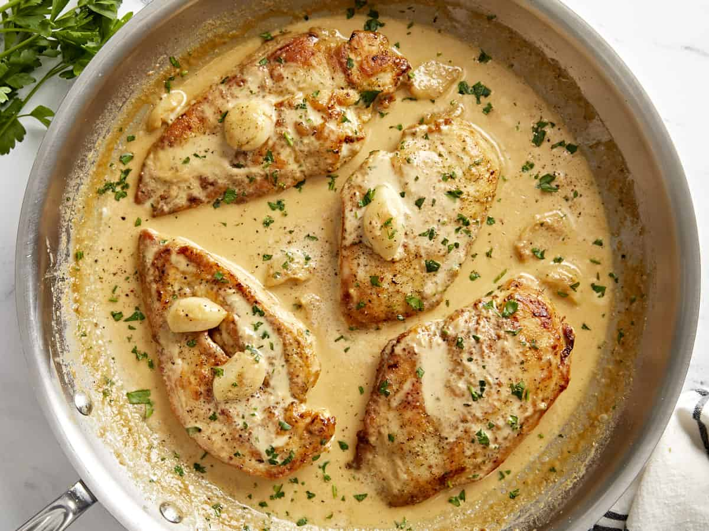
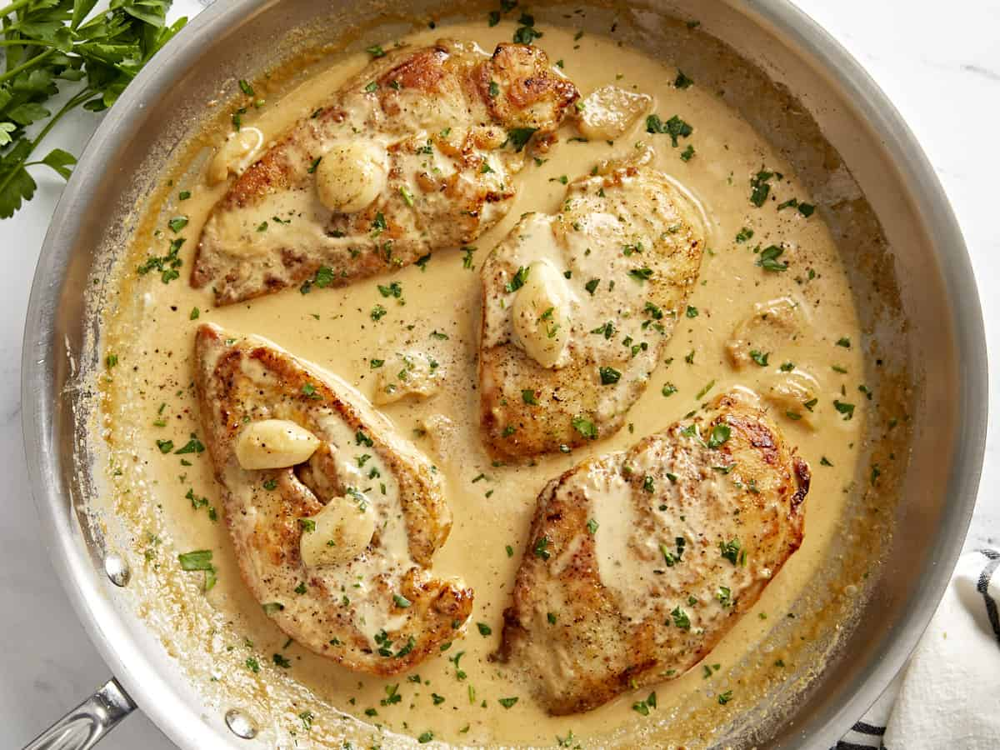
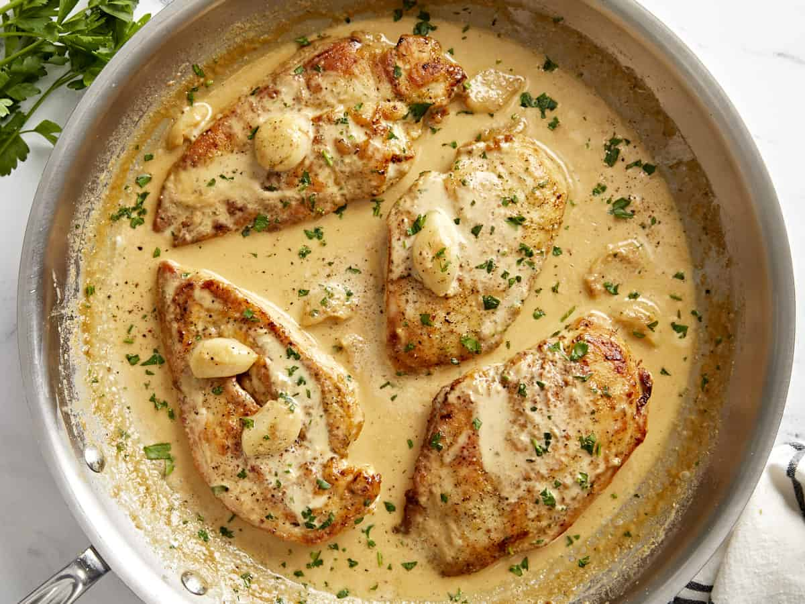

Hello to everyone who sees this!
My name is above and I am 19, my hometown is Balkhash.
Studying IT Management in KBTU
For the whole life if someone starts talking about hobbies, the first thing comes to my mind is Speedcubing - ability to quickly solve different Rubik's Cubes. The first cube I ever solved was way back in 2017 I think, that was something. And then I went all in - I couldn't stop solving and buying new cubes, nowadays I've like 40 of these thingies. From 2018 till 2021 I was even going to National Rubik's Cube competitions to Aktobe, Almaty, Astana, Semey, Karaganda and so on. The photos you see are made by me in 2018, and are not even half of my collection. All other photos are me goofing around with shaping some silly pictures out of cubes. I love doing it to this day but not as fired up about it as when I was a kid.

| № | Interesting Facts |
|---|---|
| 1 | I am stuttering since birth. My mom was also, that's why I am |
| 2 | My record for solving a 3x3 rubik's cube is 16 seconds. 2x2 - 1.52 seconds |
| 3 | I can type very fast (350-420 cpm) and love mechanic keyboards |
| 4 | The background is actually my favorite color. It is very calming | 5 | My hair grows very fast. I was short-cropped in March, now I have a bun. |